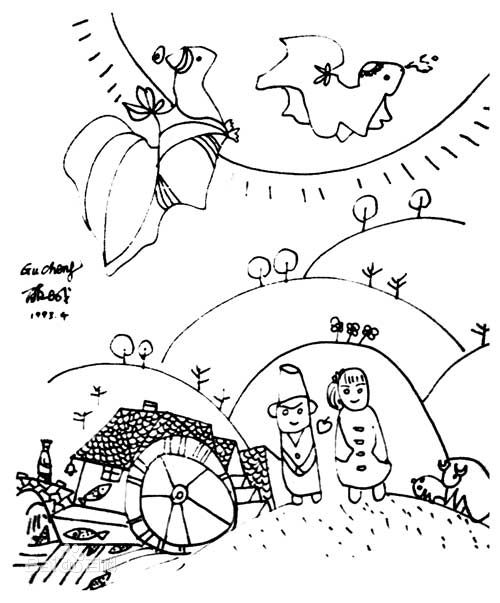

《锦瑟》
李商隐
锦瑟无端五十弦，
一弦一柱思华年。
庄生晓梦迷蝴蝶，
望帝春心托杜鹃。
沧海月明珠有泪，
蓝田日暖玉生烟。
此情可待成追忆？
只是当时已惘然。
错误
郑愁予
我打江南走过
那等在季节里的容颜
如莲花的开落
东风不来，三月的柳絮不飞
你的心如小小的寂寞的城
恰若青石的街道向晚
跫音不响，三月的春帏不揭
你的心是小小的窗扉紧掩
我达达的马蹄是美丽的错误
我不是归人，是过客
顾城的《门前》
我多么希望，有一个门口
早晨，阳光照在草上
我们站着
扶着自己的门扇
门很低，但太阳是明亮的
草在结它的种子
风在摇它的叶子
我们站着，不说话
就十分美好
有门，不用开开
是我们的，就十分美好
早晨，黑夜还要流浪
我们把六弦琴交给他
我们不走了
我们需要土地
需要永不毁灭的土地
我们要乘着它
度过一生
土地是粗糙的，有时狭隘
然而，它有历史
有一份天空，一份月亮
一份露水和早晨
我们爱土地
我们站着
用木鞋挖着泥土
门也晒热了
我们轻轻靠着，十分美好
墙后的草不会再长大了，
它只用指尖，触了触阳光
我不怕世界，可是怕你。
——顾城
在醒来时，世界都远了。
我需要，最狂的风，和最静的海。
——顾城 《第八个早晨》
爱不可怕，可怕的是爱得不够，
最可怕的是爱得不够还要勉强。
——顾城
断章——卞之琳
你站在桥上看风景,
看风景的人在楼上看你。
明月装饰了你的窗子,
你装饰了别人的梦。
一代人
黑夜给了我黑色的眼睛
我却用它寻找光明
你不愿意种花，是的，
你说，我不愿看见它一点点凋落。
为了避免结束，你避免了一切开始。
——顾城 《避免》
别 顾城
在春天，我把手帕轻挥，
是让我远去，
还是马上返回？
不，什么也不是，
什么也不因为，
就象水中的落花，
就象花上的露水……
只有影子懂得，
只有风能体会，
只有叹息惊起的彩蝶，
还在心花中纷飞……
远和近
顾城
你，一会看我，
一会看云。我觉得，
你看我时很远，
你看云时很近。
我爱这片土地

我的心爱着世界
爱着，在一个冬天的夜晚
轻轻吻她，像纯净的野火
吻着全部草地
草地是温暖的，在尽头
有一片冰湖，湖底睡着鲈鱼
我的心爱着世界
她融化了，像一朵霜花
融进了我的血液，她亲切地流着，
从海洋流向高山，
流着，使眼睛变得蔚蓝
使早晨变得红润
我的心爱着世界
我爱着，用我的血液为她画像，
可爱的侧面像玉米和群星的珠串
不再闪耀 ，
有些人疲倦了
转过身去，欣赏一张广告